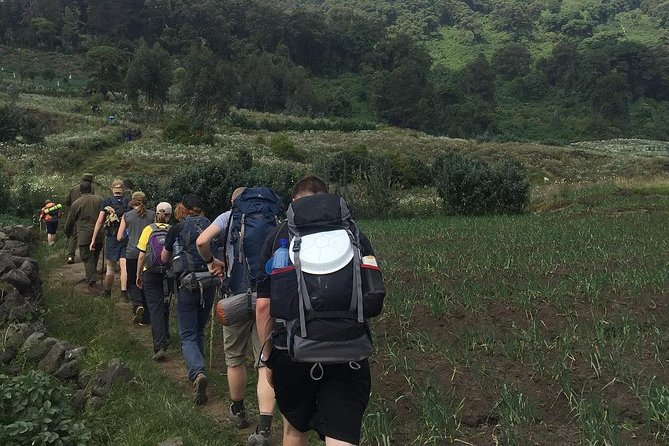
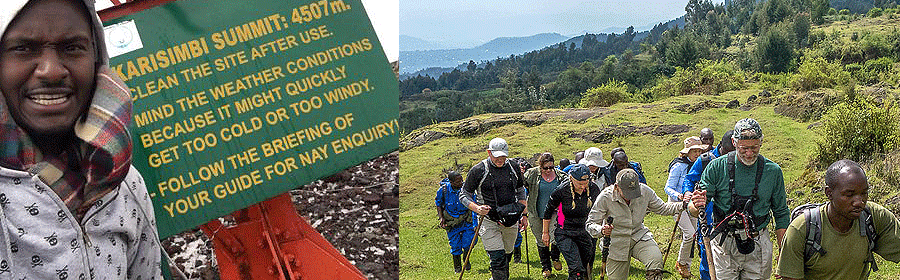
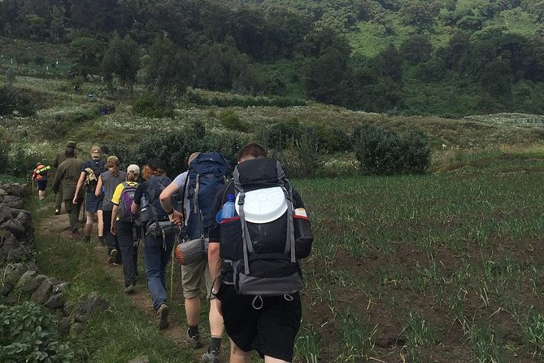
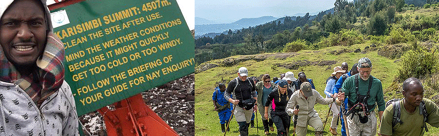

.gif)
.jpg)
.jpg)
.jpg)
Kigali Genocide Museum – Learn about Rwanda’s tragic past & the road to recovery
The museum is built at the burial site of 250,000 victims of the 1994 genocide against the Tutsi. The museum contains documentation of the genocide and one has to visit this place to learn about Rwanda’s recent tragic history if one is to appreciate the immense progress the country has achieved to date, in terms of reconciliation and development
The museum also contains examples of other genocides in the world. It thus seeks to provide a vital lesson on what blind hate can cause. The museum is free to visit and you can walk through it on your own. There is an audio guide if you want one but for a fee of $15. Allow at least 2 hours for the visit.
Camp Kigali: commemorates the massacre of 10 Belgium UN Blue Berets on the first of the day of the genocide
Presidential Palace Museum: This is the residence of the former President of Rwanda, Habyarimana, whose plane was shot down on 6th April to spark the genocide. The place contains the flight debris from the shot plane
Campaign Against Genocide Museum: This new museum documents the heroics of the RPA (Rwanda Patriotic Army) led by President Kagame that fought to stop the genocide and has built Rwanda from the ashes into one of the most progressive countries in Africa.
.webp)
.jpg)
.jpg)
.jpg)
Other Exciting places
Umusambi Village Nature Reserve
Umusambi Village is Kigali’s premier wildlife sanctuary and nature reserve. It is located on the outskirts of Kigali City along the Kigali – Rwamagana highway which is also the route to Akagera National Park, Rwanda’s savannah park. Umusambi Village is the place to go in Kigali if you want to experience nature and tranquility. It is a restored wetland that was purposely established to rehabilitate rescued Grey Crowned Cranes and is home to up 70 cranes. The reserve has a neat trail network that provides access to the swamp, bushes, grasslands and woodland areas. For the keen birder it is an excellent spot as the wetland has more than 100 bird species.
Umusambi Village Nature Reserve – Grey Crowned Crane conservation center & birding hotspot in Kigali
Umusambi Village is a new spot in Kigali City that has been established as Kigali’s first wildlife sanctuary and nature reserve originally to rehabilitate and host the Grey Crowned Cranes that have been rescued from captivity. It is a wonderful spot to visit for a nature walk where you observe and learn about these elegant Grey Crowned Cranes and experience nature in Kigali. The Umusambi Village is many hectares (about 21 hectares) of recently restored wetland that had been destroyed for settlement and agriculture. But even within a short time of being restored the wetland has seen an incredible recovery of its habitats with; ponds filling up and almost making permanent swamps, growing lush marshes and grasslands, dense thickets and fast developing woodlands that in a couple of years will be nice forest cover. The reserve has an excellent neat trail network accessing the different areas and habitats of the Umusambi village. It offers a perfect spot to retreat and enjoy nature in Kigali Umusambi Village is also well situated along the road to Akagera National Park and can therefore serve as a nice spot to stop over for a couple of hours in the morning to enjoy nature before proceeding to the east of the country for your safari trip to Akagera National Park.
Conserving the Grey Crowned Cranes in Rwanda
The Grey Crowned Cranes were on the verge of extinction in Rwanda as they would be captured by locals and kept in homes as pets or traded. To prevent them from flying away the captors would either have their wings broken or flight feathers plucked out, causing immense injuries. The number of Grey Crowned Cranes is about 500 down from more than 2500 birds in the 1980s. It is not until local conservationists pushed government of Rwanda to create a law against keeping or capturing the Grey Crowned Cranes that there has been a turnaround with numbers are recovering steadily. The conservationists in Rwanda under Rwanda Wildlife Conservation Association (RWCA) further have established Umusambi Village to bring in the Grey Crowned Cranes that were set free by the new government law but would not have survived in the wild due to injuries, so they can have a home in Umusambi where they are rehabilitated and would be released back in the wild for those that would have healed from injuries. Many rehabilitated cranes are thriving in the reserve and are breeding. Many other flocks of cranes have discovered the reserve and often fly in to share on the supplemented feeds, interact with the residents and fly out after the meetup. Some of the visitors have found soulmates among the injured residents and now live at the sanctuary and are breeding. Many of the rehabilitated cranes that have healed from injuries shall be released back in the wild, however those with permanent injuries shall live in the reserve as their home
Birding in Umusambi Village
Hosting more than 100 species of birds, by far Umusambi Village nature reserve is the best spot for birdwatching in Kigali, and offers an excellent place to begin your birding trip in Rwanda. With the excellent trail network the birder can access the grasslands, swamps, bush, and woodlands areas of the reserve spotting an array of birds. With a full day on the birding trail, you can leave with more than 30 species on your list
Birds in Umusambi Village
Some of the specials you can look forward to include:
- Trilling Cisticola
- White-collard Oliveback
- African Firefinch
- Purple-crested Turaco
- Olive Woodpecker
- Cardinal Woodpecker
- Black-shouldered Nightjar
- Lesser Honeyguide
- Yellow-breasted Apalis
- Green-winged Pytilia
- Brown Parrot
- Black Kite (Palearctic migrant blacked-billed migrans)
- Tambourine Dove
- Black-headed Weaver
- Village Weaver
- Lesser Stripped Swallow
- Barn Swallow
- White-headed Sawing
- Spot-flanked Barbet
- Bare-faced Go-away-bird
.png)
.jpg) 



Nyandungu Eco-tourism Park
Nyandungu Eco-tourism Park is also established from a restored wetland in Kigali City. The 121.7 hectares of wetland and forest park has a neat 10km trail of walking and cycling trails providing a nice nature experience as you walk or cycle through the different habitats of the eco-park. For the birders, this is another exciting place in Kigali where one can spend a full day on the birding trail ticking off lots of local species. About 100 bird species are said to inhabit Nyandungu wetlands. Maybe you just want to have a meal in a different environment away from the hustle of the city hotels and restaurants? The park has a classy restaurant where you can enjoy a meal while taking in the nice views of ponds and bushes teeming with birdlife.
Nyamirambo Women’s Center & the Nyamirambo Walking tour
The Nyamirambo Women’s Center is a cooperative by local women which offers skills to other women in the area as a way of uplifting them economically and socially. The centre teaches basket weaving, handcraft making, cooking, computer literacy, sewing, etc… You can visit the centre to see a variety of handcrafts made by women, or you can book to join a class for some activities such as cooking local dishes and weaving.
The Nyamirambo Women’s Center also organizes a Nyamirambo walking tour. Nyamirambo is one of the most vibrant suburbs of Kigali. This is a great tour to discover the way of life of the local Rwandans living in the suburbs. You will check out the local markets, the local businesses, and chat with the locals along the way. At the end of the walking tour you can be hosted for lunch by one of the residents of Nyamirambo, this is if you started the tour in the morning. The walking tour is normally done as a half-day experience starting in the morning, so allow up to 3 hours.
Kigali Car Free Zone
In the center of the hustle and bustle of Kigali City in Nyarugenge District is a car-free zone which is a stretch covering an entire street. It is a pedestrian only stretch and it is lovely to walk, take a rest or buy souvenirs from craft shops. Often there will be exhibitions and entertainment on the weekend hence a nice place to check out while on your visit to Kigali.
Kimironko Market
This is the biggest and busiest market in Kigali where almost everything is sold from foodstuffs and fabrics to clothing. This is an economic landmark which should not miss out on your Kigali day tour itinerary. You have your measurements taken by a skilful tailor and get colourful African wear made for you in a matter of hours
Kaplaki Handicrafts market
This is a large crafts market and it is the place to visit if you are looking to purchase your handcraft souvenirs
The Nyamirambo Women’s Center also organizes a Nyamirambo walking tour. Nyamirambo is one of the most vibrant suburbs of Kigali. This is a great tour to discover the way of life of the local Rwandans living in the suburbs. You will check out the local markets, the local businesses, and chat with the locals along the way. At the end of the walking tour you can be hosted for lunch by one of the residents of Nyamirambo, this is if you started the tour in the morning. The walking tour is normally done as a half-day experience starting in the morning, so allow up to 3 hours.
Hiking Mount Kigali – the highest point in Kigali (1850m)
You go on a hike on the highest point of Kigali and enjoy panoramic views of the city. Could take you about 2 hours, starting the hike from the Nyambirambo suburb. You could also just drive to the summit.Kigali Conventional Center
The convention centre has become an icon of Kigali City. It has an intriguing design of the Rwandan traditional agaseke basket and has different colour themes every night. It is such a spectacle at night and a must-see
Old and New Kigali
Kigali has a plan of what they want the city to look like, and there is already a new Kigali that is developing to take the old Kigali. So crossing between the new and old Kigali gives you a picture of what Kigali has been and what it will be in the next decade.
Kigali Golf course
If you are a golf player, the Kigali Golf Club is one of the most beautiful courses you can play on. A 9-hole golf course, it is situated in a lush environment near Lake Nyarutarama. You can also visit simply to enjoy the scenery. You can combine a visit the golf club with the lake.
Lake Nyarutarama
For nature lovers, this is a little lake situated near the golf club. The lake is surrounded with bush and woodland and the bird lovers it offers a good birding opportunity in Kigali.
Roof top restaurant at Ubumwe Grande Hotel
The roof top restaurant commands panoramic views over Kigali. Visit the restaurant for dinner or lunch and enjoy the breathtaking views of Kigali’s cityscape
Art galleries
For the art lovers, Kigali has a range of art galleries for you to savor. Inema Art gallery is the most popular and if you are to include an art gallery in your Kigali day tour then this is one of the highly recommended galleries
📋 Itinerary
On arrival our meet and greet representative will take you through immigration, pick your luggage, the necessary COVID TEST for the gorilla trek then handle over to your host/guide.
A short drive to the hotel as you have a short briefing by your host/guide, check in. Relax at the hotel. Optional city exploration if your flight is arrives earlier in the day.
Details for Day 2:Enjoy a relaxed breakfast before you meet your guide, set off for Musanze enjoying a scenic drive as you traverse the a thousand hills of Rwanda. Arriving in time to visit the new Ellen DeGeneres Campus of Dian Fossey Gorilla Fund.
After lunch embark on one of the most beautiful scenic drives you have been on with a few stops for pictures along the way and learning more about Rwanda and the rural life/communities..
Details for Day 3:In the morning 6:30 am, you will go for pre trekking briefing at the park headquarters before going for the gorilla trekking adventure in the forest. Trekking may take 3-6 hours depending on the movement of the gentle giants (our close cousins) you will visit. Stay in the presence of the gorillas for a maximum of one hour before returning back. In the evening, enjoy a relaxed evening at the lodge
Early in the morning 6:30 am, you will go for the golden monkey trek another endangered species living \ on the foot hills of the Virunga Massive in Volcanoes National Park a short trekking experience where you spend an hour with the monkeys. On return, you will go have lunch at the lodge and set off to Kigali for an earlier dinner before you head to the airport for your departure
Accommodation Options
Kigali
Musanze
END OF SAFARI
Rwanda's Wildlife
Rwanda is a very diverse country with over 4 national parks, one of the few destinations where you can see 2 great apes (Mountain Gorillas and Chimpanzees) and the big 5 game wildlife (lion, leopard, elephant, rhino, and buffalo) on one safari. On a Rwanda Tour, you have more than just wildlife viewing activities like coffee and tea tours, kayaking, canoeing, cultural/community tours, biking/cycling tours, and hiking as some of the active tours.
Time to Visit Rwanda
The best time to visit Rwanda is during the dry seasons from June to September and December to February. These periods are ideal for wildlife viewing, especially gorilla trekking.
Currency in Rwanda
Rwanda uses the Rwandan Franc (RWF) as its currency. Major currencies like USD and Euros are widely accepted in hotels and tourist areas, but it's advisable to carry some local cash for smaller purchases.
Rwanda's Culture
Rwanda has a rich culture, known for its traditional music, dance, and crafts. The Rwandan people are friendly and hospitable, and cultural experiences include visiting local communities and enjoying traditional meals.
Travel Documents
A valid passport is required to enter Rwanda. Visitors may need a visa depending on their nationality. It's recommended to apply for an eVisa or a visa on arrival for convenience.
Health Requirements
Visitors should have a yellow fever vaccination certificate and consider vaccinations for hepatitis A and B. Malaria prophylaxis is also recommended for travelers.
Our Location
Visit us in Musanze, Rwanda—a gateway to the majestic Volcanoes National Park. Enjoy the breathtaking scenery, cultural experiences, and the best of Rwandan hospitality.